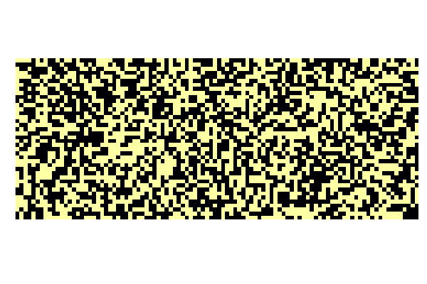
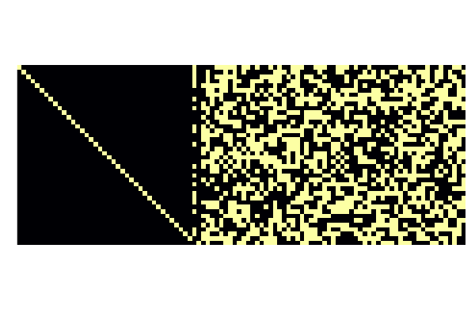
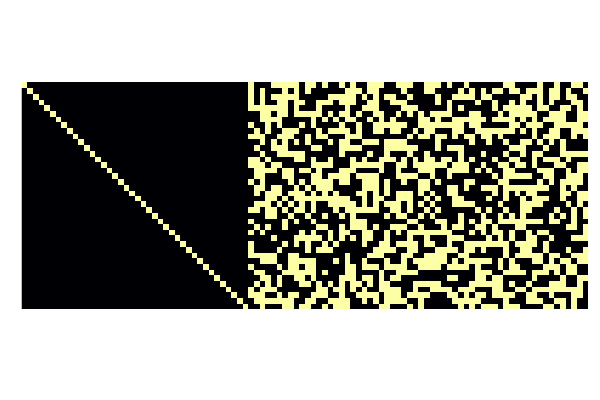
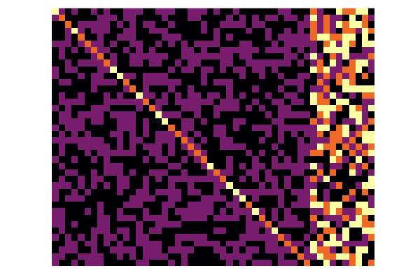
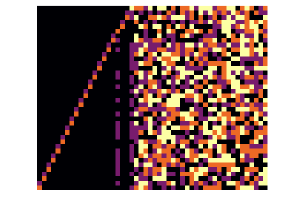

Plotting
Stabilizers have a plot recipe that can be used with Plots.jl. It simply displays the corresponding parity check matrix (extracted with stab_to_gf2) as a bitmap image.
julia> plot(random_stabilizer(40,50));
julia> plot(canonicalize!(random_stabilizer(40,50)));
julia> plot(canonicalize_gott!(random_stabilizer(40,50))[1]);
julia> plot(canonicalize_gott!(random_stabilizer(40,50))[1]; xzcomponents=:together);
julia> plot(canonicalize_rref!(random_stabilizer(40,50),1:50)[1]; xzcomponents=:together);